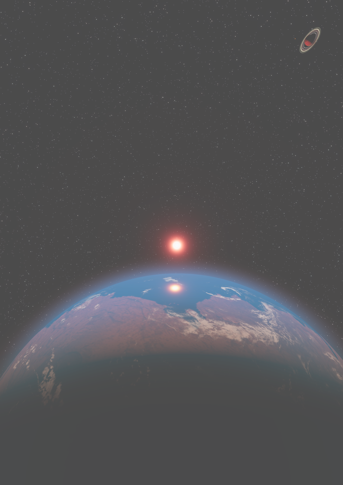
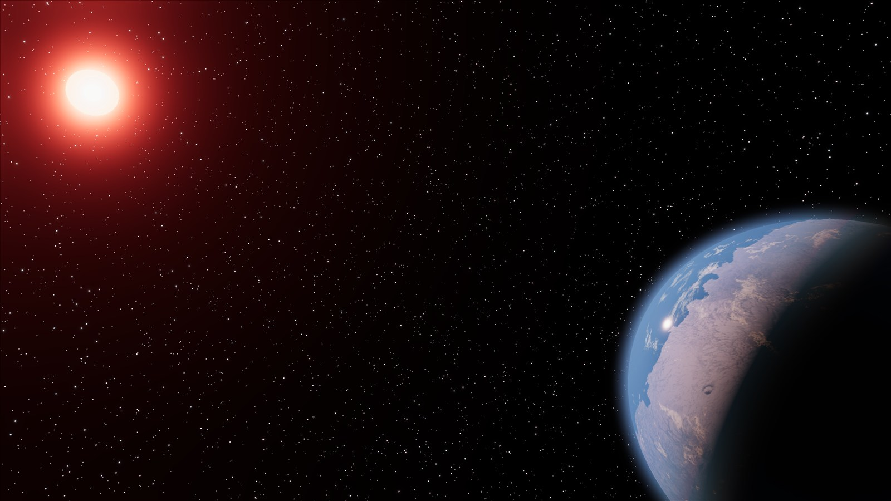
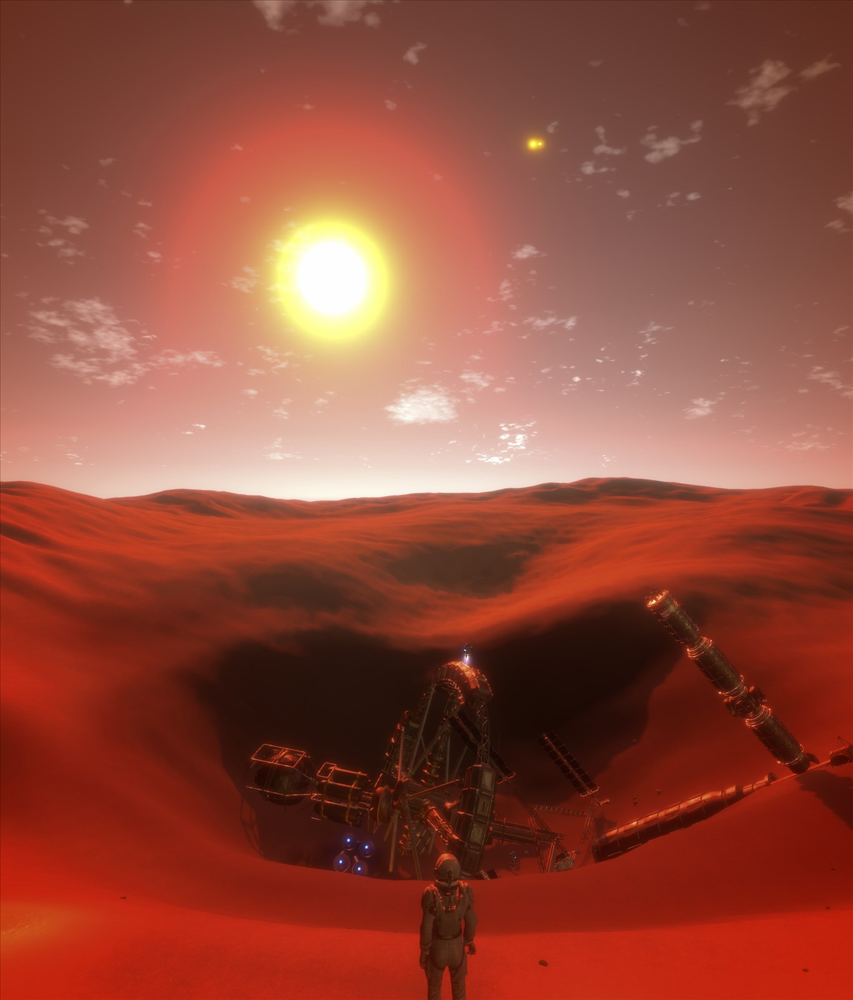
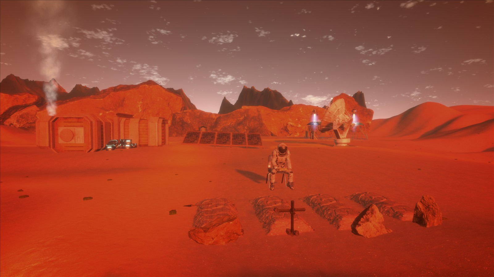
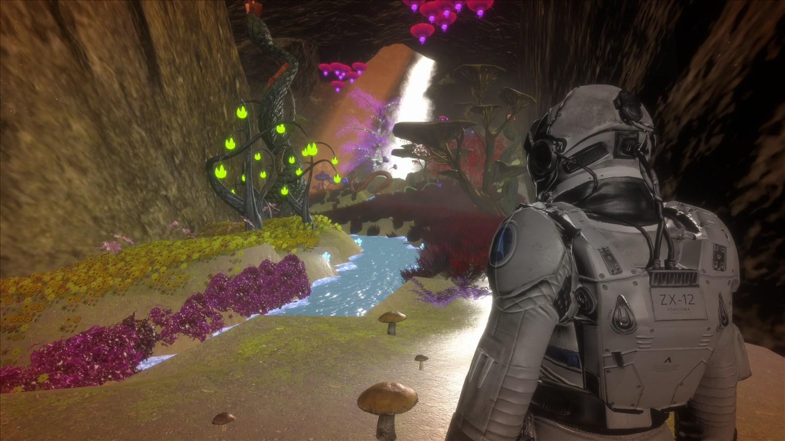
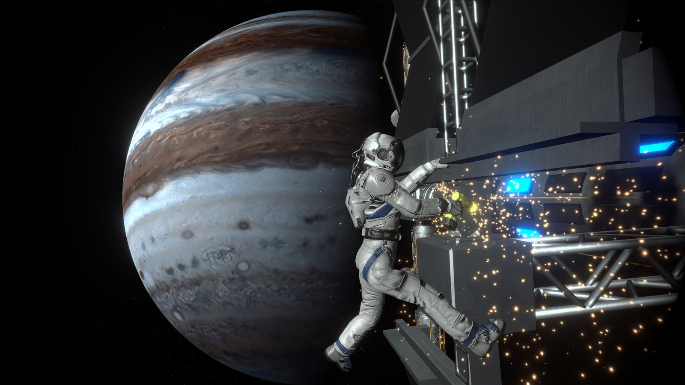
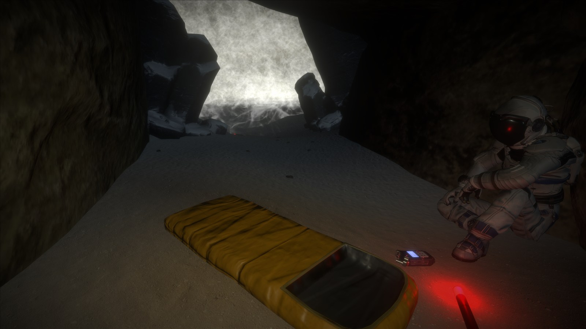
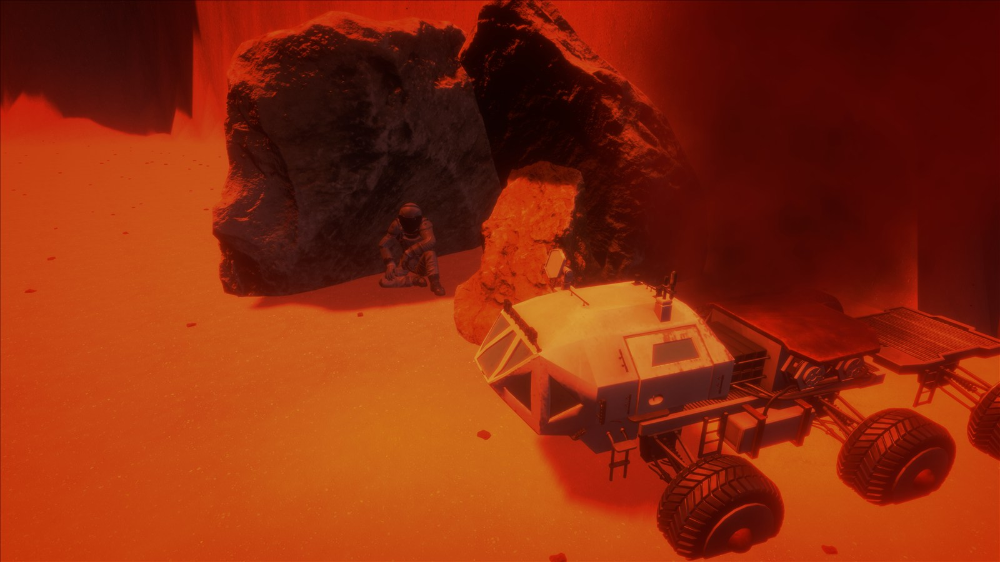
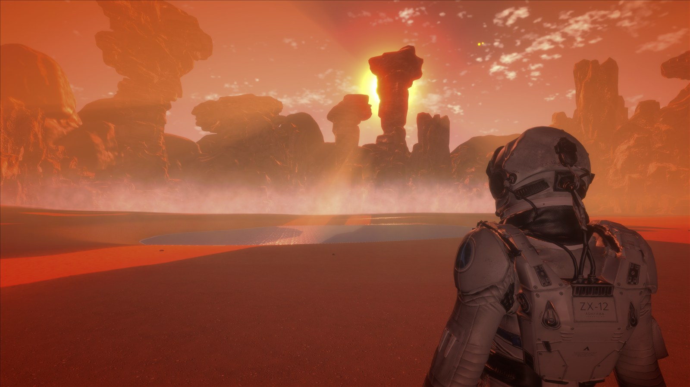
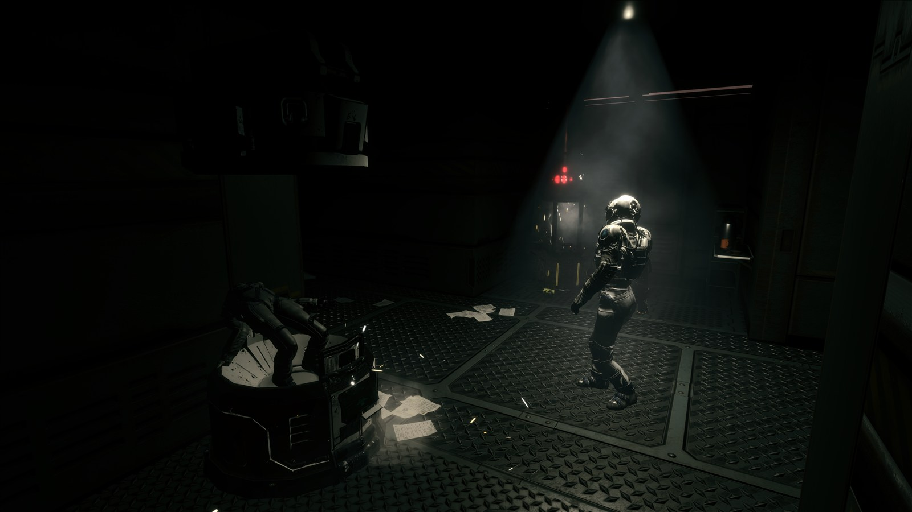

Art & imagined worlds
Space renders, scientific images, and stories.
Space renders
Worlds beyond our own.
A collection of cosmic perspectives.

Under a red sun
A blue world on the edge of night, illuminated by a distant red star.
1 / 7
Game development
Proxima
A game I created about space exploration!

First-person · Exploration · Science fiction
One last journey.
A future worth finding.
With Earth becoming uninhabitable, humanity sends three missions towards nearby exoplanets. You are an astronaut bound for Proxima Centauri b, searching for a new home.
When the mission takes an unexpected turn, survival becomes a journey through an unfamiliar world and its secrets.
Windows / macOS / Linux
Discover the story & download on itch.io ↗Postcards from Proxima
Explore the artwork













